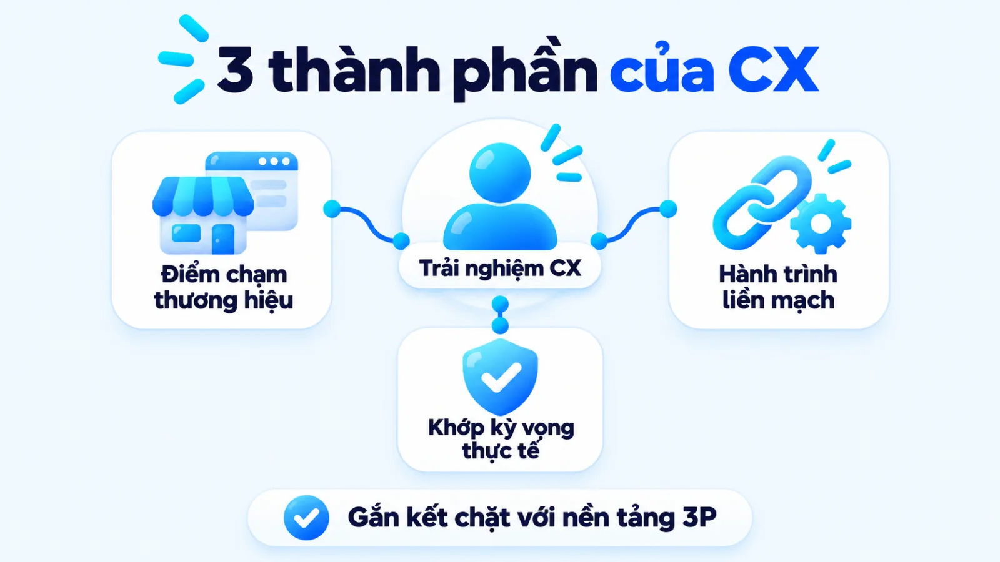
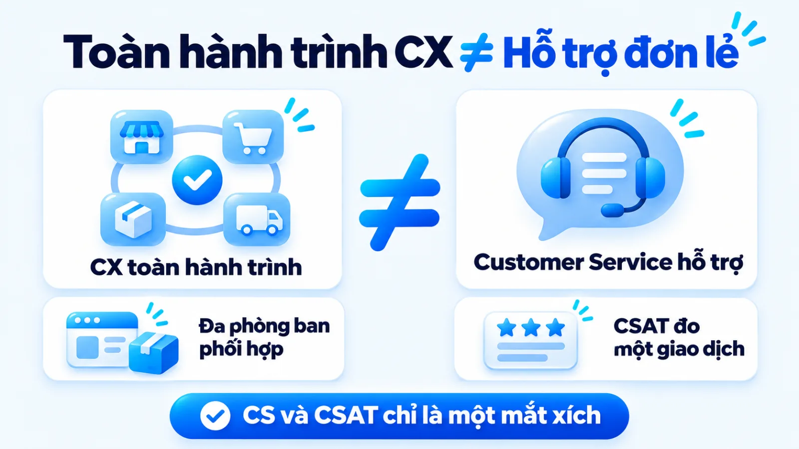
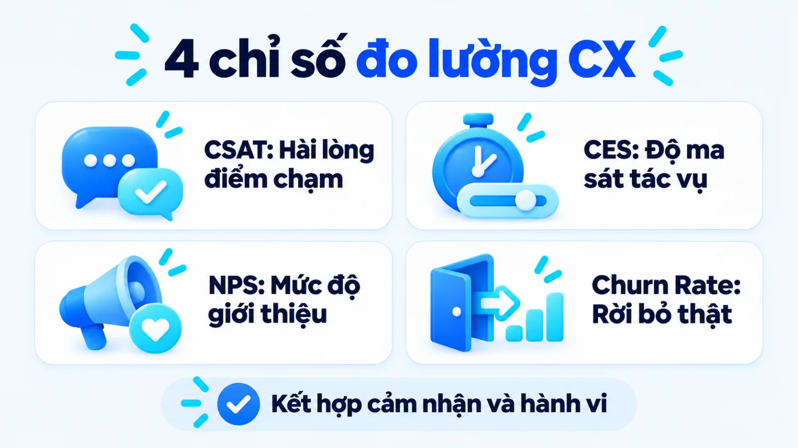
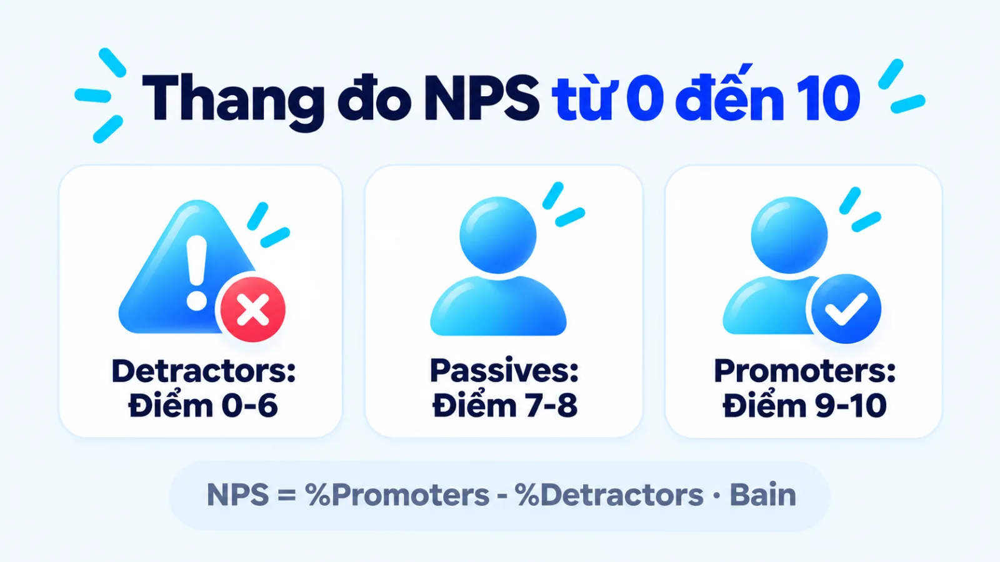
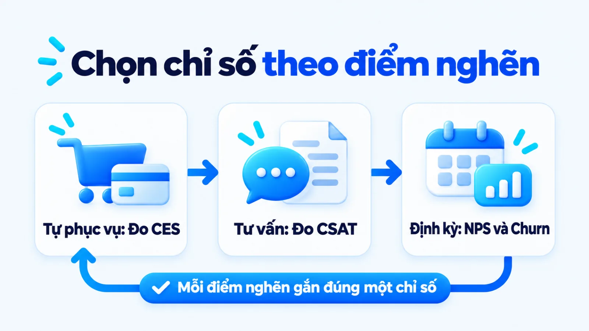
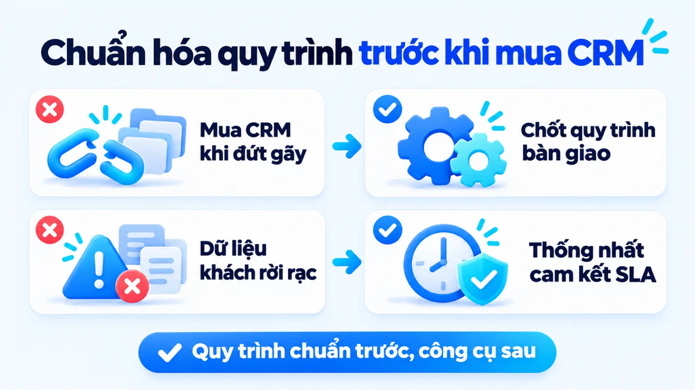
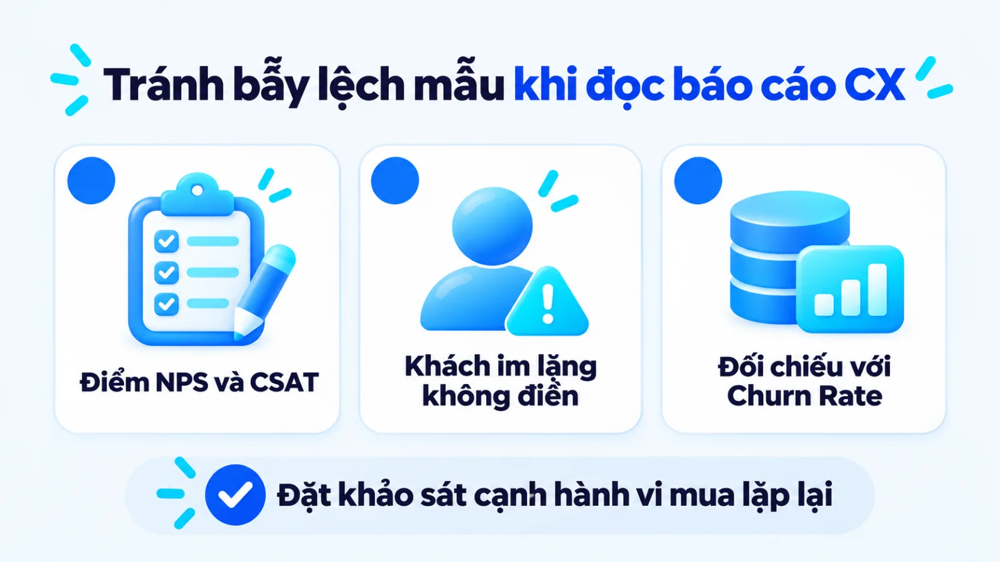

CX là gì và cách đo trải nghiệm khách hàng
CX là gì được hiểu là toàn bộ nhận thức, cảm xúc và đánh giá tích lũy của khách hàng xuyên suốt mọi điểm chạm với doanh nghiệp, từ lúc tìm hiểu thông tin, giao dịch cho đến quá trình sử dụng sau bán. Trong thực tế, nhiều doanh nghiệp vừa và nhỏ thường giao khoán trải nghiệm khách hàng cho bộ phận chăm sóc khách hàng, dù nguyên nhân người mua rời bỏ lại bắt nguồn từ thông điệp quảng cáo quá đà hoặc luồng đặt hàng rườm rà. Khi nhầm cảm nhận tức thời sau một lần hỗ trợ với độ ma sát toàn hành trình, đội ngũ dễ mua phần mềm đắt tiền mà vẫn mất khách mua lại. Tôi là Lê Tuấn Việt, Marketing Leader tại TAKI Group. Trong bài viết này, tôi làm rõ ranh giới giữa Marketing với vận hành, cách chọn bốn chỉ số đo theo điểm nghẽn và trình tự chuẩn hóa quy trình trước khi mua công cụ.
- Đăng ngày
- Cập nhật

Tóm tắt nhanh
- Customer Experience (CX) bao trùm toàn bộ hành trình từ trước, trong đến sau mua do cả doanh nghiệp cùng tạo ra, khác với Customer Service chỉ xử lý yêu cầu hỗ trợ tại một điểm chạm đơn lẻ.
- Hệ thống đo lường CX cần kết hợp bốn chỉ số theo tầng mục tiêu gồm CSAT đo hài lòng giao dịch, CES đo độ ma sát thao tác, NPS đo Điểm khuyến nghị ròng và Churn Rate đo tỷ lệ rời bỏ thực tế.
- Doanh nghiệp vừa và nhỏ nên ưu tiên giảm nỗ lực của khách hàng tại các điểm chạm thiết yếu và chuẩn hóa quy trình bàn giao nội bộ trước khi đầu tư phần mềm CRM tự động.
- Điểm khảo sát cảm nhận cao chưa đảm bảo doanh thu bền vững nếu tách rời việc theo dõi nhóm khách hàng thụ động (Passives) và tỷ lệ tái mua trong cùng kỳ đo.
Mục lục bài viết8 phần
CX là gì và 3 thành phần của Customer Experience
CX là gì (viết tắt của Customer Experience, tức trải nghiệm khách hàng) là tổng hợp toàn bộ nhận thức, cảm xúc và đánh giá của người mua xuyên suốt mọi điểm chạm với doanh nghiệp từ lúc nhận biết, cân nhắc, giao dịch cho đến quá trình sử dụng và gắn bó sau bán. Khác với một lần hỗ trợ đơn lẻ, CX phản ánh mối quan hệ tích lũy qua chất lượng sản phẩm, quy trình vận hành và con người phục vụ.
Đặt trong bức tranh Marketing bài bản, trải nghiệm khách hàng không bắt đầu khi người mua bước vào quầy thu ngân hay mở hộp sản phẩm. Trải nghiệm ấy hình thành ngay từ khoảnh khắc họ đọc một bài viết tư vấn, nhìn thấy cam kết trên mẫu quảng cáo và đối chiếu lời hứa đó với thực tế nhận được. Khi thiết kế hệ thống marketing tổng thể, người phụ trách phải nối liền mạch kỳ vọng đầu phễu với năng lực đáp ứng ở cuối phễu.
Tác động của trải nghiệm đối với doanh thu thể hiện rõ qua hành vi ngừng mua và mức sẵn lòng chi trả của thị trường. Báo cáo khảo sát Future of CX năm 2018 của PwC thực hiện trên mẫu đại diện 15.000 người tiêu dùng tại 12 quốc gia chỉ ra rằng cứ ba người thì có một người (32%) sẽ rời bỏ ngay cả thương hiệu mình yêu thích chỉ sau một trải nghiệm tồi tệ, trong khi trải nghiệm tốt giúp khách hàng sẵn sàng trả mức giá cao hơn tới 16% cho sản phẩm và dịch vụ.
Ba thành phần tạo nên trải nghiệm khách hàng
Để quản trị chất lượng tương tác thay vì cảm tính, doanh nghiệp cần bóc tách cấu trúc hình thành nhận thức của người mua trên toàn bộ chu kỳ giao dịch. Ba thành phần cốt lõi tạo nên trải nghiệm khách hàng tại một doanh nghiệp gồm các yếu tố dưới đây.
- Điểm chạm thương hiệu (Touchpoints): Tất cả những nơi người mua tiếp xúc trực tiếp với doanh nghiệp, từ bài đăng mạng xã hội, trang đích, tin nhắn tư vấn đến khâu giao nhận hàng và bảo hành sau mua.
- Sự liền mạch của hành trình: Mức độ kết nối thông tin giữa các kênh online và offline, đảm bảo người mua không phải lặp lại cùng một yêu cầu khi chuyển từ bộ phận tư vấn sang bộ phận kỹ thuật.
- Độ khớp giữa kỳ vọng và thực tế: Khoảng cách giữa những gì thông điệp truyền thông hứa hẹn trước khi mua với giá trị sử dụng, tốc độ phục vụ và thái độ hỗ trợ mà khách hàng thực sự nhận được.

Vai trò của 3P dịch vụ trong quản trị điểm chạm
Nhiều chủ SME (doanh nghiệp vừa và nhỏ) chỉ tập trung sửa kịch bản chào hàng khi thấy khách phàn nàn, mà quên rằng trải nghiệm được quyết định bởi nền tảng vận hành phía sau. Khi triển khai chiến lược 7P cho dịch vụ, việc quản trị CX gắn chặt với ba chữ P mở rộng gồm Con người (People), Quy trình (Process) và Bằng chứng hữu hình (Physical Evidence).
Cụ thể, yếu tố Quy trình giải quyết tốc độ phản hồi và cắt bỏ các bước thủ tục gây chờ đợi; yếu tố Con người quyết định sự thấu cảm và năng lực tháo gỡ vướng mắc tại chỗ; còn Bằng chứng hữu hình từ giao diện website, bảng báo giá đến bao bì đóng gói giúp củng cố niềm tin ở cả điểm chạm vật lý lẫn kỹ thuật số.
Điểm tôi muốn làm rõ là khi thông điệp Marketing kéo kỳ vọng lên quá cao mà quy trình giao hàng và hậu mãi phía sau bị đứt gãy, ngân sách quảng cáo càng lớn sẽ càng đẩy nhanh tốc độ mất khách.
Bản chất CX là gì khi đặt cạnh Customer Service
Khi phân tích bản chất CX là gì trong vận hành, điểm khác biệt cốt lõi nằm ở chỗ Customer Experience bao trùm toàn bộ hành trình từ trước khi mua đến khi tái mua và do cả doanh nghiệp cùng kiến tạo, còn Customer Service (dịch vụ khách hàng) chỉ là nghiệp vụ hỗ trợ và xử lý sự cố tại một vài điểm chạm cụ thể. Trong khi đó, CSAT (Customer Satisfaction, tức sự hài lòng khách hàng) là thước đo cảm nhận sau một tương tác riêng lẻ chứ không đại diện cho toàn bộ sức khỏe giữ chân người mua.
Trong thực tế, không ít doanh nghiệp gom chung ba khái niệm này làm một và giao toàn bộ chỉ tiêu giữ chân khách cho phòng Chăm sóc khách hàng (CSKH). Khi khách hàng rời đi vì sản phẩm khó sử dụng, giao diện đặt đơn trên điện thoại bị lỗi hoặc nhân viên bán hàng tư vấn sai gói dịch vụ, bộ phận CSKH dù lịch sự đến đâu cũng chỉ giải quyết phần ngọn.
Bảng dưới đây đối chiếu ranh giới giữa Customer Experience (đo bằng NPS là Điểm khuyến nghị ròng và CES là Điểm nỗ lực khách hàng) với Customer Service và CSAT theo bốn tiêu chí vận hành.
| Tiêu chí | Customer Experience (CX) | Customer Service và CSAT |
|---|---|---|
| Phạm vi điểm chạm | Bao trùm toàn bộ hành trình từ nhận biết, cân nhắc, mua hàng đến sử dụng và tái mua | Tập trung vào các điểm chạm hỗ trợ, giải đáp thắc mắc hoặc xử lý sự cố phát sinh |
| Tính chất tác động | Chủ động thiết kế luồng trải nghiệm liền mạch và kiểm soát kỳ vọng trước khi giao dịch | Phản ứng trực tiếp khi khách hàng gửi yêu cầu hỗ trợ hoặc đánh giá sau một tác vụ |
| Bộ phận phụ trách | Phối hợp liên phòng ban gồm Marketing, Bán hàng, Sản phẩm, Vận hành và CSKH | Bộ phận Chăm sóc khách hàng hoặc đội ngũ hỗ trợ kỹ thuật trực tiếp đảm nhận |
| Thước đo cốt lõi | Kết hợp NPS, CES, CSAT cùng tỷ lệ khách hàng rời bỏ và tần suất mua lại theo kỳ | Điểm hài lòng tức thời CSAT, thời gian phản hồi đầu tiên và tỷ lệ giải quyết xong |
Giới hạn khi đọc bảng: sự phân tách trên nhằm làm rõ phạm vi trách nhiệm chính giữa các phòng ban, không có nghĩa là tách rời dữ liệu. Customer Service chính là một mắt xích quan trọng nằm bên trong Customer Experience, và dữ liệu phàn nàn ghi nhận tại bàn hỗ trợ là đầu vào trực tiếp để Marketing cùng bộ phận Sản phẩm điều chỉnh lại thông điệp cũng như quy trình cung ứng.

Một điểm dễ nhầm khác là đánh đồng nỗ lực chiều lòng khách hàng vượt kỳ vọng tại quầy dịch vụ với việc tạo ra lòng trung thành.
Bài nghiên cứu đăng trên Harvard Business Review tháng 7/2010 của Matthew Dixon, Karen Freeman và Nicholas Toman khảo sát phạm vi khách hàng liên hệ trung tâm hỗ trợ và kênh tự phục vụ chỉ ra rằng điều người mua thực sự cần để gắn bó là giải quyết trôi chảy vấn đề của họ, thay vì những nỗ lực gây choáng ngợp vượt kỳ vọng.
Cách đo lường trải nghiệm khách hàng qua 4 chỉ số
Cách đo lường trải nghiệm khách hàng chính xác đòi hỏi doanh nghiệp kết hợp bốn chỉ số theo đúng tầng mục tiêu thay vì dựa vào một con số đơn lẻ: CSAT đo mức độ hài lòng tức thời tại điểm chạm, CES đo độ ma sát khi thực hiện tác vụ, NPS đo Điểm khuyến nghị ròng phản ánh lòng trung thành và Churn Rate đo tỷ lệ khách hàng thực sự rời bỏ theo kỳ.
Việc chọn sai chỉ số cho câu hỏi quản trị sẽ dẫn tới quyết định phân bổ nguồn lực sai lệch. Bảng dưới đây tổng hợp khung đo lường bốn chỉ số cốt lõi kèm công thức tính, điểm chạm áp dụng và giới hạn cần lưu ý khi đọc báo cáo.
| Chỉ số và cách tính | Điểm chạm và mục tiêu đo | Giới hạn khi đọc dữ liệu |
|---|---|---|
| CSAT (% khách chấm 4, 5) | Đo cảm nhận hài lòng tức thời ngay sau khi hoàn tất giao dịch hoặc đóng phiếu hỗ trợ | Chỉ phản ánh một điểm chạm lẻ, không báo trước việc khách hàng âm thầm ngừng mua |
| CES (Thang độ dễ tác vụ) | Đo mức độ dễ dàng khi khách tự tra cứu, thanh toán, đổi trả hoặc yêu cầu hỗ trợ | Tập trung vào việc giảm ma sát thao tác, không đo cảm xúc gắn kết với thương hiệu |
| NPS (% Ủng hộ trừ Phản đối) | Đo mức độ sẵn lòng giới thiệu thương hiệu theo quý hoặc nửa năm trên toàn hành trình | Đo ý định thái độ chứ chưa phải hành vi mua lại, dễ lệch nếu tỷ lệ trả lời thấp |
| Churn Rate (% rời bỏ kỳ) | Đo tỷ lệ khách hàng ngừng giao dịch hoặc hủy gói dịch vụ trên tổng khách đầu kỳ | Là chỉ số trễ báo hiệu kết quả đã xảy ra, không tự chỉ ra nguyên nhân khách rời đi |
Giới hạn khi đọc bảng: ba chỉ số đầu (CSAT, CES, NPS) thuộc nhóm dữ liệu cảm nhận thu qua khảo sát nên luôn chịu ảnh hưởng bởi tỷ lệ người chịu trả lời, trong khi Churn Rate là chỉ số hành vi ghi nhận từ hệ thống đơn hàng. Người phụ trách chỉ nắm được bức tranh thật khi đặt cả hai nhóm chỉ số này cạnh nhau trong cùng một kỳ đo.

Đo Net Promoter Score và tỷ lệ khách hàng rời bỏ
Nhiều tài liệu tiếng Việt dịch nhầm thuật ngữ Net Promoter Score (NPS) thành Điểm quảng cáo ròng do hiểu sai chữ Promoter, trong khi bản chất đúng của chỉ số này là Điểm khuyến nghị ròng hoặc Điểm giới thiệu ròng.
Trong bài báo gốc công bố năm 2003 trên Harvard Business Review, tác giả Fred Reichheld đối chiếu dữ liệu khảo sát với tốc độ tăng trưởng của các doanh nghiệp nhiều ngành và chỉ ra rằng khả năng dự báo tăng trưởng từ lòng trung thành có thể nắm bắt qua câu hỏi về mức sẵn lòng giới thiệu doanh nghiệp cho bạn bè hoặc đồng nghiệp.
Theo phương pháp Net Promoter System do Bain & Company công bố cho thang đo từ 0 đến 10, người trả lời được chia thành ba nhóm: nhóm Ủng hộ (Promoters, chấm điểm 9 hoặc 10), nhóm Thụ động (Passives, chấm điểm 7 hoặc 8, tạm hài lòng nhưng dễ sang đối thủ) và nhóm Phản đối (Detractors, chấm điểm từ 0 đến 6). Điểm khuyến nghị ròng (NPS) bằng tỷ lệ phần trăm nhóm Ủng hộ trừ đi tỷ lệ phần trăm nhóm Phản đối.
Tuy nhiên, vì NPS đo lường thái độ và ý định giới thiệu, doanh nghiệp bắt buộc phải theo dõi song song Tỷ lệ khách hàng rời bỏ (Churn Rate, hay Customer Attrition Rate). Churn Rate trong một kỳ đo được tính bằng tỷ lệ phần trăm giữa số lượng khách hàng ngừng mua hoặc hủy dịch vụ trong kỳ chia cho tổng số khách hàng đang hoạt động ở thời điểm đầu kỳ.
Đặt NPS cạnh Churn Rate giúp chủ doanh nghiệp phát hiện sớm nghịch lý khách vẫn chấm điểm quý mến thương hiệu nhưng tần suất đặt hàng thực tế lại sụt giảm, như tình huống đối chiếu dữ liệu chi tiết ở mục Giới hạn dữ liệu bên dưới.
Đo sự hài lòng CSAT và điểm nỗ lực khách hàng CES
Ở cấp độ từng điểm chạm giao dịch, hai chỉ số CSAT và CES giúp đội ngũ khoanh vùng chính xác khâu vận hành đang gặp sự cố.
Theo tài liệu hướng dẫn đo lường trên nền tảng quản trị trải nghiệm Qualtrics áp dụng cho thang Likert 5 mức, tỷ lệ phần trăm Điểm hài lòng khách hàng (CSAT) được tính bằng số khách hàng đánh giá hài lòng ở mức 4 và mức 5 chia cho tổng số phản hồi khảo sát thu về rồi nhân với 100.
Nếu CSAT cho biết khách hàng vui hay không sau một lần tư vấn, thì Điểm nỗ lực khách hàng (CES, tức Customer Effort Score) lại trả lời câu hỏi khách hàng đã phải vất vả thế nào để hoàn thành mục tiêu. Tài liệu kỹ thuật về Customer Effort Score của Qualtrics hướng dẫn đo chỉ số này bằng câu hỏi đánh giá mức độ dễ dàng hay khó khăn khi khách hàng tương tác hoặc giải quyết một tác vụ trên thang từ rất dễ đến rất khó.
Khi điểm CES thấp ở khâu thanh toán, đổi trả hay tìm kiếm thông tin, việc ép nhân viên gọi điện xin lỗi để kéo điểm CSAT không ngăn được khách bỏ đi ở lần mua sau.

Quy trình 4 bước cải thiện CX cho doanh nghiệp nhỏ
Doanh nghiệp vừa và nhỏ nên cải thiện CX theo quy trình bốn bước có đầu ra kiểm chứng gồm: rà soát điểm chạm đứt gãy trên hành trình mua, chọn chỉ số đo đúng điểm nghẽn, chuẩn hóa quy trình vận hành cùng trải nghiệm số trước khi mua CRM (phần mềm quản trị quan hệ khách hàng), và đối chiếu dữ liệu khảo sát với hành vi mua lại để đóng vòng phản hồi.
- IRà soát điểm chạmKhoanh vùng ba điểm tiếp xúc có tỷ lệ khách bỏ dở hoặc phàn nàn cao nhất trên hành trình.
- IIChọn chỉ số theo điểm nghẽnGắn đúng một thước đo CSAT, CES, NPS hoặc Churn Rate tương ứng với khâu đang cần sửa.
- IIIChuẩn hóa quy trình và kênh sốCắt bỏ thao tác thừa, thống nhất quy tắc bàn giao nội bộ trước khi đầu tư phần mềm CRM.
- IVĐóng vòng phản hồi dữ liệuLiên hệ gỡ vướng cho nhóm chấm điểm thấp và đối chiếu khảo sát với tỷ lệ mua lại thực tế.
Bước 1: Rà soát điểm chạm và hành trình mua
Liệt kê toàn bộ các điểm tiếp xúc online và offline từ lúc khách hàng tìm kiếm thông tin, đọc bảng giá, nhắn tin hỏi tư vấn đến khi nhận hàng và bảo hành. Ở bước này, đội ngũ cần kết hợp việc thu thập dữ liệu zero-party và first-party từ phiếu khảo sát ngắn, lịch sử trò chuyện và hành vi trên website để tìm ra nơi khách hàng hay bỏ cuộc nhất, thay vì ngồi trong phòng họp đoán cảm nhận của người mua.
Đầu ra: danh sách ba điểm chạm đang có tỷ lệ rơi rụng hoặc số lượng phàn nàn lặp lại cao nhất trong quý gần nhất.
Bước 2: Chọn chỉ số đo theo điểm nghẽn ưu tiên
Gắn đúng một chỉ số đo lường tại điểm nghẽn ưu tiên vừa khoanh vùng để tránh gửi hàng loạt biểu mẫu khảo sát làm phiền khách hàng. Nếu điểm nghẽn nằm ở luồng tự đặt hàng hoặc thủ tục đổi trả, hãy đặt câu hỏi CES; nếu cần kiểm tra chất lượng buổi tư vấn của nhân viên, hãy đo CSAT; còn khi theo dõi sức khỏe giữ chân toàn tệp khách theo quý, hãy kết hợp NPS với Churn Rate.
Đồng thời, trên kênh website, người phụ trách nên theo dõi thêm các chuyển đổi vi mô trên hành trình mua để biết khách dừng lại ở thao tác nào trước khi rời trang.
Đầu ra: bảng quy ước chỉ số đo gồm công thức tính, kỳ đo, cỡ mẫu tối thiểu và ngưỡng cảnh báo thống nhất giữa Marketing với CSKH.

Bước 3: Chuẩn hóa quy trình và trải nghiệm số
Tiến hành sửa quy trình phối hợp nội bộ (Process) và tối ưu trải nghiệm khách hàng kỹ thuật số (DCX, tức Digital Customer Experience) ngay tại các điểm chạm bị tắc nghẽn. Trên môi trường trực tuyến, khi triển khai chiến lược digital marketing cho SME, việc thiết kế trang đích có kiến trúc danh mục nông, tốc độ tải nhanh trên điện thoại và biểu mẫu gọn giúp giảm đáng kể độ ma sát CES cho người dùng tự phục vụ.
Song song với thao tác kỹ thuật, doanh nghiệp cần chuẩn hóa giọng điệu thương hiệu tại điểm chạm để thông điệp từ bài quảng cáo, kịch bản chatbot đến cuộc gọi xử lý sự cố không mâu thuẫn nhau.
Vậy khi nào cần sửa quy trình trước, khi nào mới nên mua phần mềm CRM? Nếu phòng Marketing và phòng Bán hàng chưa thống nhất định nghĩa khách hàng tiềm năng đạt chuẩn, chưa có cam kết thời gian phản hồi (SLA, tức Service Level Agreement) và chưa rõ ai phụ trách khách sau khi chốt đơn, bạn bắt buộc phải chuẩn hóa quy trình thủ công trước. Đưa một quy trình lỗi lên phần mềm chỉ làm sai lệch dữ liệu nhanh hơn.
Đầu ra: quy trình bàn giao khách hàng có cam kết thời gian phản hồi chuẩn và luồng thao tác trên trang đích đã cắt bỏ các bước thừa.
Bước 4: Đối chiếu dữ liệu và đóng vòng phản hồi
Thiết lập cơ chế đóng vòng phản hồi (close the loop) bằng cách phân công nhân sự liên hệ trực tiếp với nhóm khách hàng chấm điểm thấp (nhóm Phản đối trong NPS hoặc nhóm đánh giá không hài lòng trong CSAT) ngay trong khung giờ cam kết để tháo gỡ vướng mắc.
Cuối mỗi kỳ đo, người phụ trách đặt bảng điểm khảo sát cạnh tỷ lệ mua lại thực tế để kiểm chứng xem các cải tiến quy trình có thực sự giữ chân được khách hàng hay không.
Đầu ra: biên bản rà soát hàng tháng đối chiếu biến động chỉ số CX với tỷ lệ rời bỏ, kèm danh sách điều chỉnh thông điệp bán hàng cho kỳ tới.
Ba sai lầm thường gặp khi đo và tối ưu CX
Ba sai lầm phổ biến khiến doanh nghiệp tốn ngân sách nhưng không cải thiện được tỷ lệ giữ chân khách hàng gồm: đánh đồng điểm hài lòng ngắn hạn với lòng trung thành thực tế, mua phần mềm CRM khi quy trình và dữ liệu nội bộ chưa đồng nhất, và chạy chiến dịch quảng cáo hứa hẹn vượt quá năng lực thực thi tại điểm chạm.
Những lệch lạc này thường xuất hiện khi các phòng ban vận hành theo chỉ tiêu tách biệt: Marketing chỉ tính số lượt để lại thông tin, Bán hàng chỉ tính đơn chốt đầu tiên, còn CSKH chỉ đếm số phiếu hỗ trợ đã đóng. Dưới đây là phân tích cơ chế gây thất thoát khách hàng của từng sai lầm và hướng điều chỉnh thực tế.
- Đánh đồng CSAT giao dịch với giữ chân: Thấy điểm hài lòng sau cuộc gọi đạt mức rất cao nên chủ quan, trong khi khách hàng vẫn rời bỏ vì thủ tục bảo hành rườm rà và chi phí ẩn không được đo bằng CES hay Churn Rate.
- Mua CRM khi quy trình chưa chuẩn: Chi ngân sách lớn mua phần mềm tự động gửi tin nhắn chăm sóc khi dữ liệu khách hàng còn trùng lặp và thiếu quy ước bàn giao nội bộ, khiến người mua nhận thông tin rác lệch hoàn toàn nhu cầu.
- Quảng cáo vượt năng lực thực thi: Đẩy mạnh thông điệp cam kết giao hàng tức thì hoặc tặng kèm dịch vụ khi kho vận và đội ngũ kỹ thuật đang quá tải, trực tiếp tạo ra nhóm khách hàng phản đối ngay lần mua đầu.

Để tránh rơi vào bẫy tối ưu cục bộ từng phòng ban, ban giám đốc cần một khung rà soát nối từ thông điệp thu hút ban đầu đến năng lực giữ chân cuối phễu. Khi doanh nghiệp chưa xác định được điểm rơi khách hàng nằm ở khâu định vị tệp người mua hay khâu vận hành điểm chạm, việc tham khảo tư vấn chiến lược marketing giúp đội ngũ bóc tách đúng nút thắt trước khi mở rộng ngân sách truyền thông.
Giới hạn dữ liệu khi đọc chỉ số CX
Điểm khảo sát CSAT, CES hay NPS cao chưa đảm bảo khách hàng sẽ tiếp tục mua hàng nếu mẫu phản hồi bị lệch về nhóm khách thân thiết, bỏ sót nhóm khách hàng thụ động im lặng rời đi, hoặc không được đặt cạnh tỷ lệ khách hàng rời bỏ (Churn Rate) và tần suất mua lại trong cùng kỳ đo.
Để thấy rõ rủi ro khi đọc từng chỉ số cảm nhận tách rời khỏi dữ liệu hành vi giao dịch, hãy xét một tình huống giả định dưới đây.
Điểm khảo sát NPS dương nhưng doanh nghiệp vẫn mất khách gia hạn hợp đồng trong quý
Trong một tình huống giả định, một doanh nghiệp dịch vụ B2B gửi khảo sát NPS định kỳ nhưng chỉ một nửa tệp khách đang hoạt động phản hồi, với đa số người trả lời thuộc nhóm Ủng hộ (chấm 9 hoặc 10) và rất ít người thuộc nhóm Phản đối (chấm 0 đến 6). Tuy nhiên, cuối kỳ đo của ví dụ này, bộ phận kế toán vẫn ghi nhận một lượng lớn hợp đồng ngừng gia hạn khiến dòng tiền tái mua sụt giảm.
Trong ví dụ nêu trên, cách làm sai là báo cáo tách rời rằng điểm NPS đạt mức dương cao để xin tăng ngân sách quảng cáo thu hút khách mới. Ngược lại, cách đọc dữ liệu đúng là ghép thẳng kết quả khảo sát vào danh sách theo dõi gia hạn hợp đồng của toàn bộ tệp khách đầu kỳ: kiểm tra xem bao nhiêu khách hủy dịch vụ nằm ở nhóm im lặng không điền khảo sát và bao nhiêu người thuộc nhóm Thụ động (chấm 7 hoặc 8) đã chuyển sang nhà cung cấp có quy trình tiện lợi hơn.
Ba giới hạn mẫu bắt buộc kiểm tra khi đọc báo cáo CX
Thứ nhất, độ lệch phản hồi tự nguyện khiến những người thất vọng âm thầm hiếm khi điền phiếu khảo sát dài. Thứ hai, khoảng trễ thời gian làm cho điểm NPS quý này chưa phản ánh ngay vào doanh thu nếu chu kỳ mua lại kéo dài nhiều tháng. Thứ ba, cỡ mẫu phản hồi quá nhỏ trong mỗi kỳ đo sẽ làm điểm phần trăm dao động mạnh chỉ vì một vài cá nhân thay đổi ý kiến.

Câu hỏi thường gặp về trải nghiệm khách hàng (CX)
Doanh nghiệp nhỏ ít nguồn lực nên đo chỉ số CX nào trước?
Doanh nghiệp nhỏ ít nguồn lực nên bắt đầu đo từ cặp chỉ số Tỷ lệ khách hàng rời bỏ (Churn Rate) dựa trên dữ liệu đơn hàng sẵn có, kết hợp với Điểm nỗ lực khách hàng (CES) tại điểm chạm hay phát sinh phàn nàn nhất. Churn Rate cho biết quy mô mất khách thực tế mà không tốn chi phí khảo sát, còn CES chỉ đích danh bước quy trình đang gây vướng mắc để đội ngũ sửa ngay. Sau khi luồng mua hàng và hỗ trợ cơ bản đã vận hành trôi chảy, bạn mới cần mở rộng sang đo CSAT theo giao dịch và khảo sát NPS định kỳ.
Khi nào cần sửa quy trình trước khi mua phần mềm CRM?
Doanh nghiệp bắt buộc phải sửa quy trình vận hành (Process) trước khi mua phần mềm CRM khi các bộ phận Marketing, Bán hàng và CSKH chưa có quy ước bàn giao thông tin khách hàng, chưa thống nhất trạng thái xử lý và thiếu cam kết thời gian phản hồi. Nếu đưa một luồng công việc chồng chéo cùng dữ liệu rời rạc lên phần mềm, công cụ chỉ tự động hóa sự hỗn loạn và làm tăng chi phí duy trì của đội ngũ. Bạn chỉ nên đầu tư CRM sau khi quy trình thủ công đã rõ người chịu trách nhiệm, rõ đầu ra từng bước và lượng khách vượt ngưỡng theo dõi bằng bảng tính.
Vì sao điểm khảo sát CSAT cao nhưng khách vẫn rời bỏ?
Điểm khảo sát CSAT cao nhưng khách hàng vẫn rời bỏ vì CSAT chỉ phản ánh cảm nhận tức thời tại một tương tác đơn lẻ như thái độ lịch sự của tư vấn viên, chứ không đo toàn bộ độ ma sát tích lũy khi sử dụng sản phẩm. Bên cạnh đó, mẫu khảo sát tự nguyện thường bị lệch do nhóm khách hàng thụ động (Passives) hoặc người mua thất vọng âm thầm thường bỏ qua phiếu đánh giá và lặng lẽ chuyển sang đối thủ. Để khắc phục, người phụ trách cần đặt CSAT cạnh Điểm nỗ lực khách hàng (CES) ở khâu tự phục vụ và đối chiếu trực tiếp với tỷ lệ rời bỏ trong cùng kỳ.
Trải nghiệm khách hàng kỹ thuật số tối ưu từ điểm chạm nào?
Trải nghiệm khách hàng kỹ thuật số (DCX) nên được ưu tiên tối ưu từ điểm chạm có tỷ lệ người dùng bỏ dở tác vụ cao nhất, thường là trang tra cứu thông tin giá, biểu mẫu đặt hàng trên điện thoại và luồng phản hồi tin nhắn đầu tiên. Mục tiêu cốt lõi của DCX là cắt giảm các thao tác thừa để khách hàng tự hoàn thành mục tiêu nhanh chóng mà không phải chuyển kênh hay lặp lại thông tin nhiều lần. Hiệu quả cải thiện có thể kiểm chứng ngay qua mức giảm của số phiếu yêu cầu hỗ trợ cơ bản và sự gia tăng tỷ lệ hoàn tất thao tác trên trang.
Bao lâu doanh nghiệp nên gửi khảo sát NPS một lần?
Doanh nghiệp nên gửi khảo sát Điểm khuyến nghị ròng (NPS) định kỳ theo từng quý hoặc nửa năm một lần để khách hàng có đủ thời gian trải nghiệm trọn vẹn giá trị thực tế của sản phẩm và dịch vụ. Việc gửi câu hỏi NPS quá dày đặc ngay sau mỗi giao dịch nhỏ dễ gây phiền hà cho người nhận, làm tụt tỷ lệ phản hồi và làm nhiễu ý nghĩa đo lường lòng trung thành dài hạn. Với các tương tác ngắn hạn như vừa nhận hàng hoặc vừa đóng phiếu hỗ trợ, đội ngũ nên dùng câu hỏi CSAT hoặc CES ngắn gọn thay cho NPS.
Khi nào chưa nên triển khai khảo sát CX tự động đa kênh?
Không nên triển khai hệ thống khảo sát CX tự động đa kênh khi doanh nghiệp chưa phân công người đọc dữ liệu định kỳ và chưa có quy trình liên hệ xử lý các phản hồi chấm điểm thấp (Detractors). Việc phát phiếu khảo sát hàng loạt nhưng bỏ mặc các góp ý tiêu cực khiến khách hàng cảm thấy bị làm phiền vô ích, làm suy giảm niềm tin thương hiệu nhanh hơn cả khi không khảo sát. Ở giai đoạn đầu, doanh nghiệp chỉ cần mở một kênh thu thập phản hồi tại điểm chạm trọng yếu và cam kết giải quyết dứt điểm từng trường hợp báo lỗi trong khung giờ quy định.
Kết luận
Quản trị trải nghiệm khách hàng (CX) thực chất là bài toán đồng bộ giữa lời hứa của Marketing và năng lực thực thi của Bán hàng, Vận hành cùng CSKH trên toàn bộ hành trình mua. Thay vì đo dàn trải mọi chỉ số hay vội vàng mua phần mềm tự động, nguyên tắc quan trọng nhất là giảm độ ma sát tại điểm chạm cốt lõi và luôn đọc điểm cảm nhận song song với tỷ lệ rời bỏ thực tế.
Ngay trong tuần này, bạn có thể tự kiểm tra bằng cách trích xuất danh sách khách hàng ngừng mua trong quý gần nhất để tính thử Churn Rate, đồng thời đọc lại các tin nhắn phàn nàn gần đây để chỉ ra điểm chạm đang gây tốn nhiều thao tác nhất cho người mua.
Khi bài toán giữ chân khách hàng vượt ra ngoài việc sửa một kịch bản trả lời tin nhắn lẻ tẻ và đòi hỏi thiết kế lại toàn bộ luồng phối hợp từ thu hút, chuyển đổi đến chăm sóc sau bán, doanh nghiệp sẽ cần một khung hoạch định và đo lường đa kênh đồng bộ. Đội ngũ của bạn đang mất khách ở khâu kỳ vọng truyền thông đầu phễu hay ở độ ma sát quy trình sau khi mua?